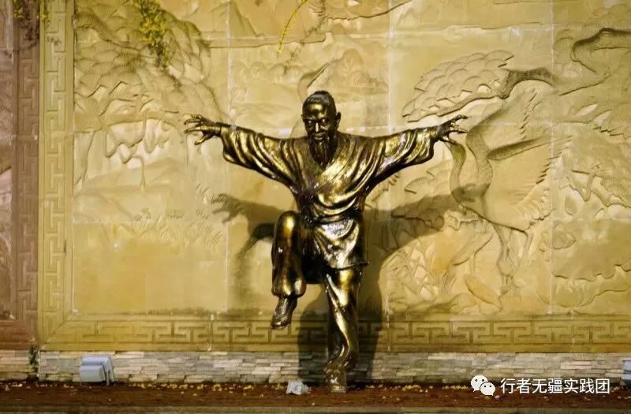

【行者无疆·拾遗皖徽】徽州精品文化科普（二）

铛铛铛~行者无疆第二期文化科普来喽！酷暑来袭，行者们也背上行囊准备出发啦，文化精深的安徽会与行者们发生怎样的碰撞呢？让我们先来了解了解徽州的文化吧~
孔雀东南飞
节选：
孔雀东南飞，五里一徘徊。“十三能织素，十四学裁衣，十五弹箜篌，十六诵诗书。十七为君妇，心中常苦悲。君既为府吏，守节情不移，贱妾留空房，相见常日稀。鸡鸣入机织，夜夜不得息。
徽剧
徽剧传统剧目有1404个，保存档案有753个。其内容涉猎列国纷争、宫迁大事、神仙鬼怪到民间生活故事。
徽剧的表演讲究群歌齐舞的雄伟气派，高台、平台的武功技巧均注重舞台画面和身段、亮相的雕塑美。
十兽灯
文化由来 十兽灯是南陵县何湾镇丫木脚自然村世代相传的古老文化艺术，距今已180余年。“十兽灯”的形成，主要受龙、马灯影响，通过口传心授、不断完善，自成体系。
习俗沿袭 十兽灯会一般在大年三十晚上开始，吃过年夜饭之后，锣鼓声响，灯会方始。
灵璧钟馗画
灵璧钟馗画的形象脱胎于吴道子的“
八公山豆腐
八公山豆腐为国家第四批非物质文化遗产，又名四季豆腐，是安徽省淮南市的地方传统名小吃。八公山豆腐晶莹剔透，白似玉板、嫩若凝脂、质地细腻、清爽滑利，用托盘装也不会散碎。成菜色泽金黄，外脆里嫩，滋味鲜美。
羽毛画
羽毛画是一门中国独创的传统工艺，运用优质家禽羽毛作为原材料，在加以运用中国国画、雕刻、木刻等传统手段制造的一种图画。
徽派舞蹈
西周前，淮河中下游南方诸国乐舞艺术丰富，风格豪放粗犷；三国两晋南北朝间，由于战乱，群众性舞蹈濒临绝迹，贵族舞蹈活跃，并出现多种风格舞蹈流入现象；唐代以后，逐步形成规范并流传至今。
华佗五禽戏
华佗五禽戏是由东汉末年著名医学家华佗根据中医原理、以模仿虎鹿熊猿鸟等五种动物的动作和神态编创的一套导引术。2011年5月23日，华佗五禽戏经国务院批准列入第三批国家级非物质文化遗产名录。
六尺巷传说
六尺巷，现存于桐城市城内，作为中国文化的遗产，是中华民族和睦谦让美德的见证，巷子的由来有着一段脍炙人口的佳话。<<让出三尺又何妨>>
图片丨行者无疆实践团
文字丨李心悦 徐信步 杨宇晴
责编丨 应雨珊 邓子孚
审核丨潘雯雯
行者无疆实践团
QQ：2758025831

随行者一起认识世界
长按二维码关注